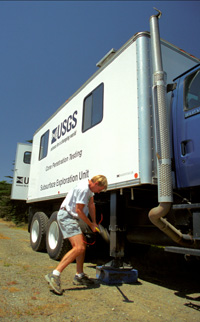
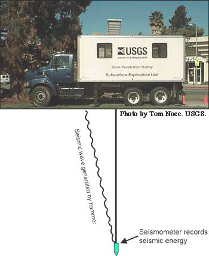

|
 Photo by Scott Haefner, USGS. |
 |
| The cone, when it includes a seismometer, can also be used to predict how local shallow soil conditions can modify shaking. The capacity of local soil conditions to modify shaking is inversely proportional to the velocity of seismic waves near the surface, which can be computed with data recorded with the seismometer. Seismic energy is created manually with a sledgehammer or automatically by a compressed air driven hammer. We measure the time it takes for the seismic energy to travel from the land surface, through the ground, to a seismometer mounted in the cone. The distance to the seismometer divided by the travel time is approximately the average shear-wave velocity. | |